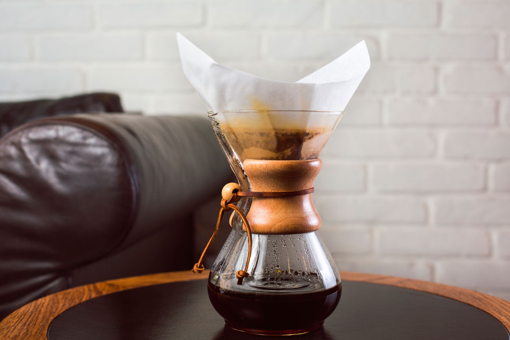

Chemex
Co je to Chemex?
Tento skleněný skvost ve tvaru přesýpacích hodin působí jako kus laboratorního načiní a není to náhoda. Tato nádoba je v podstatě upravená Erlenmeyerova baňka. Takže to, že vynálezcem byl chemik Dr. Peter J. Schlumbohm, už není tak překvapivé Chemex se od zmíněné baňky liší rozšířenou horní částí pro vložení filtru a postranní výdutí pro odvod vzduchu. Úděl dřevěná části je prostý a to ten abychom si nepopálili prsty. Jedná se o perkolační metodu.
Výhodou Chemexu je, že se jedná o jeden solidní kus, není tedy nutné nic skládat, stačí jen vložit filtr a vše je připraveno. Díky tlustým Chemexem filtrům je výsledný nápoj a opravdu chuťově čistý.
Příprava
Příprava je opravdu jednoduchá, do Chemexu vložíme filtrační papír, nasypeme kávu a zalíváme horkou vodou. Měli bychom dbát na zvýšenou opatrnost, protože sklo dokáže být dost horké, manipulujeme s Chemexem pouze pomocí dřevěné části.
Recept
Budeme potřebovat Chemex, filtrační papír, mlýnek na kávu nebo již namletou kávu a konvici na vodu ideálně s husím krkem.
-
Ohřejme vodu 93-97°C
Na 500ml použijeme 30g kávy. Požijeme tedy poměr 1:17.
-
Umeleme kávu
Hrubost kávy by se dala přirovnat k písku. Tedy středně hrubé mletí.
-
Filtrační papír
Vložíme filtrační papír do Chemexu, prolijeme ho horkou vodou, proto abychom se zbavili papírové chuti a zároveň abychom baňku nahřáli.
-
Blooming neboli květnatění
Namletou kávu nasypeme do Chemexu, opatrně zalijeme 60ml vody a necháme 30-40s odpočinout. Pokud je káva čerstvá všimneme si významného bublání. Bublání je důsledkem CO2, který se z kávy uvolňuje.
-
Extrakce
Krouživými pohyby kávu zaléváme. Neměli bychom vodu nalévat příliš agresivně, ale ani ne příliš pomalu. Výsledný čas extrakce by se měl pohybovat kolem 3-4 minut.